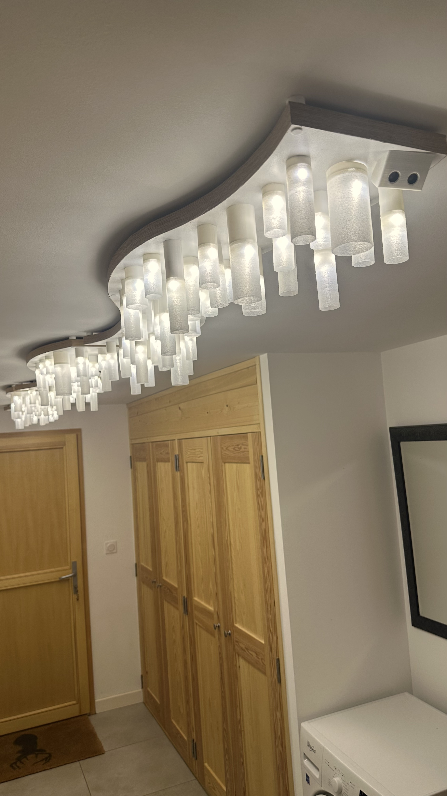
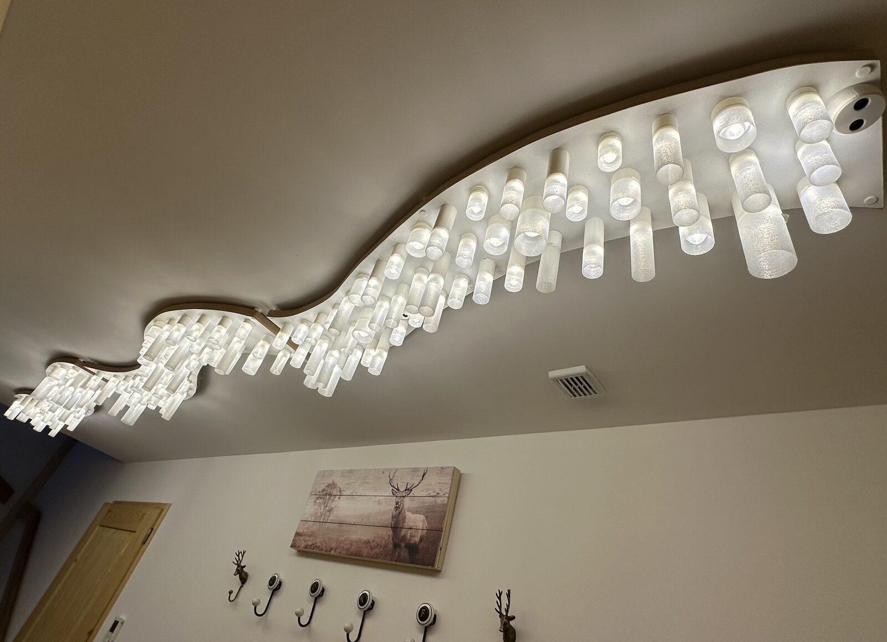
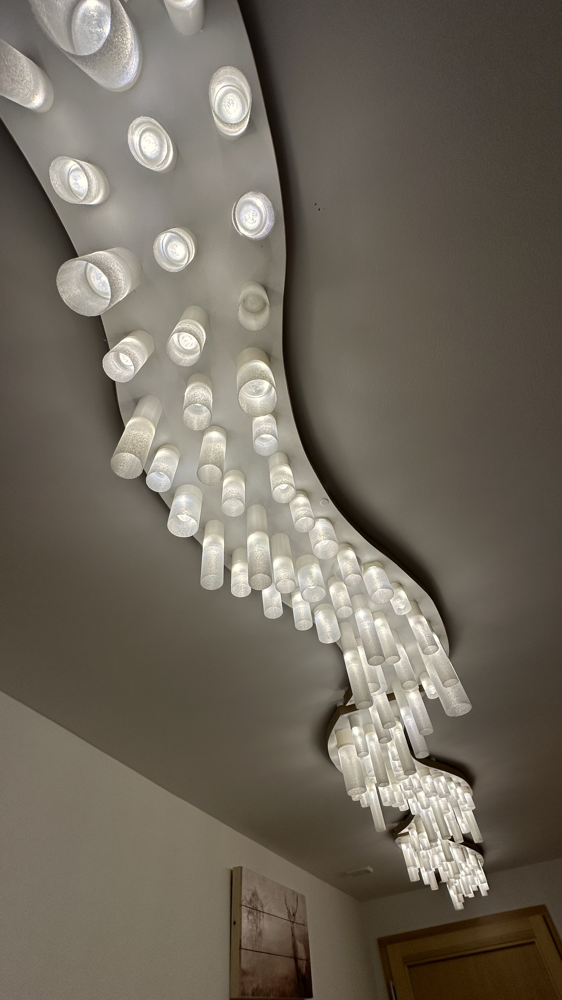

Hallway Light Installation
Animated Entrance Hall Light
An animated light installation for a residential hallway, designed to create a dynamic and welcoming experience for visitors. The piece features a series of LED lamps that respond to movement, creating a captivating visual display.